A memória do computador é um recurso extremamente importante e que exige um gerenciamento apurado. Ela é composta por vários elementos, tais como: registradores e cache (armazenamento interno); memória principal RAM (armazenamento primário) e armazenamento secundário; discos de estado sólido, magnéticos e óticos; e fitas magnéticas.
Tipos de memória
Armazenamento interno
É constituído pela memória interna do processador e engloba os registradores e o cache. É a memória de trabalho efetiva do processador. Trata-se de uma memória volátil.
Armazenamento Primário
É constituído pela memória principal do computador, normalmente referenciada como memória RAM. Armazena o código dos programas e seus dados. Pode ser acessada diretamente pelo processador, que solicita a transferência de seu conteúdo para os registradores da CPU durante o processamento. É uma memória volátil.
Armazenamento Secundário
Também chamado de Armazenamento de Massa, é a memória que armazena os dados para uso posterior, já que é não volátil. Para que seu conteúdo possa ser manipulado, é necessário que seja transferido antes para a memória primária por meio de uma operação de leitura.
O sistema operacional é o responsável por realizar a gerência da memória. Entre suas funções estão:
Alocar e desalocar os processos na memória.
Controlar os espaços disponíveis.
Impedir que um processo acesse o conteúdo da memória de outro processo.
Transferir dados entre o armazenamento primário e secundário e vice-versa.
Como os processos enxergam a memória
Como já sabemos, a memória de um computador é composta por um conjunto de circuitos eletrônicos que são capazes de armazenar bits. Podemos considerar então que, do ponto vista do hardware, ela é um conjunto de bytes, que podem, por meio de um circuito eletrônico, ser acessados individualmente. Essa memória é denominada memória física, onde efetivamente os dados serão armazenados, e corresponde a um espaço de endereçamento físico, normalmente representado em hexadecimal.
Do ponto de vista processual, entretanto, ela é vista como um conjunto de endereços lógicos que podem ser acessados diretamente por comandos da linguagem de máquina do processador. Essa memória lógica corresponde ao espaço de endereçamento do processo e, normalmente, nos sistemas atuais, é muitas vezes maior que a memória física disponível na máquina, gerando a chamada memória virtual.
Dessa forma, podemos notar que os processos não enxergam a memória física, mas apenas a memória lógica. Portanto, todas as referências a endereço para o processo correspondem ao seu espaço de endereçamento lógico, que lhe foi atribuído durante o processo de sua carga e que é independente do espaço de endereçamento de qualquer outro processo.
O modelo de memória de um processo:
Text: Área da memória que armazena o código do programa.
Data: Área de memória onde residem as variáveis do programa.
Heap: Área de trabalho do programa onde são alocadas variáveis temporárias e variáveis dinâmicas.
Pilha: Área onde ficam os registros de ativação de procedimentos, variáveis locais etc.
Dentro do espaço de endereçamento do programa, entre o Heap e a Pilha, temos uma área livre que permite que eles cresçam um em direção ao outro.
Como o processo enxerga apenas os seus endereços lógicos e o circuito eletrônico enxerga somente os endereços físicos, é necessário, então, que se faça a tradução do endereço lógico para o físico, pois, dessa forma, um programa que referencia os seus endereços lógicos pode apontar para os respectivos endereços físicos.
O componente responsável por este mapeamento é o MMU (Memory Management Unit) que consiste em um conjunto de chips que realiza seu trabalho a partir das seguintes regras:
Regra 1
Se o endereço lógico é maior que o limite inferior e menor que o limite superior, o endereço é valido. Nesse caso, o endereço lógico é igual ao endereço físico.
Regra 2
Se o endereço lógico é menor que o limite superior, adiciona o endereço base ao endereço lógico e realiza o acesso no endereço resultante. Nesse caso, o endereço lógico é diferente do endereço físico.
Regra 3
Se o endereço lógico for maior que o limite superior ou menor que o limite inferior, o endereço é inválido e é gerada uma exceção.
Para um processo, a memória é exclusiva para as suas demandas, no entanto, a memória é sempre dividida entre outros processos. Mesmo quando o sistema é monotarefa, a memória terá uma área dedicada para o sistema operacional. Enquanto nos sistemas multiprogramados, a utilização e concorrência da memória ocorre inclusive entre outros programas.
Proteção de memória
Para realizar a proteção de forma eficiente, temos que nos certificar que cada processo tenha um espaço de memória separado. Isso é fundamental para que possamos carregar vários processos na memória ao mesmo tempo, permitindo a execução concorrente deles, além de protegê-los uns dos outros.
A ideia básica da separação é que seja determinado um intervalo de endereços legais que possam ser acessados pelo processo, de forma a assegurar que esse acesso seja realizado exclusivamente por ele.
É possível fornecer essa proteção usando dois registradores, geralmente um registrador base e um registrador limite.
Quando um processo é alocado na memória, ele recebe um endereço inicial de carregamento (endereço base) e outro que corresponde ao tamanho total da área alocada ao processo (endereço limite). Ambos são armazenados, respectivamente, nos registradores base e limite.
O registrador base estabelece o limite inferior da área do processo, e a soma do limite com o endereço base define o limite superior da área do processo.
A proteção do espaço da memória é assegurada pela MMU, que, ao receber um endereço da CPU de um programa rodando em modo usuário, verifica se ele se encontra no intervalo legal do processo. Se estiver, permite o acesso; caso contrário, gera um erro fatal.
Esse esquema impede que um programa rodando em modo usuário, de forma deliberada ou acidental, modifique o código ou as estruturas de dados do sistema operacional ou de outros processos de usuários.
O carregamento dos registradores base e limite exige a execução de uma instrução privilegiada pelo Sistema Operacional (SO), concedida pelo SO estar em modo Kernel. Sendo assim, não é possível modificá-lo sem este acesso privilegiado.
Por sua vez, o sistema operacional, em modo kernel, pode acessar qualquer endereço de memória, sendo seu ou de qualquer outro processo de usuário.
Assim, permite a carga de programas do usuário, a descarga destes em caso de erros, o acesso e a alteração de argumentos de chamadas de sistema, a execução de operações de entrada e saída a partir da memória principal e vários outros serviços. Em um sistema multiprocessado, por exemplo, é possível executar mudanças de contexto, transferindo o estado de um processo dos registradores para a memória principal, antes de carregar o contexto do próximo processo da memória principal para os registradores.
O esquema de proteção aqui descrito é básico e, dependendo da política de alocação adotada, poderá sofrer modificações conforme veremos no próximo módulo.
Relocação
Um processo, quando alocado na memória principal, faz referências às suas posições, ou seja, aos endereços físicos dessa memória. Por essa razão, quando um módulo foi link-editado e seus endereços já estão associados às posições físicas do espaço de memória onde ele será alocado, diz-se que esse módulo está em Imagem de Memória, ou que ele está com Endereçamento Absoluto.
Para que um processo possa ser alocado em qualquer posição da memória, ele não pode estar com endereçamento absoluto e, nesse caso, um mapeamento de endereços deverá ser feito entre os endereços dos objetos referenciados pelo processo (lógicos) e os endereços absolutos (físicos) no espaço ocupado por eles na memória principal.
Chamamos de Espaço de Endereçamento o conjunto de endereços, sejam eles de dados ou de instruções, referenciados por um processo, podendo este ser:
Espaço Lógico de endereçamento
O conjunto de objetos ou endereços lógicos referenciados.
Espaço Físico de endereçamento
O conjunto de endereços físicos correspondentes.
A relocação de memória é, portanto, a função que mapeia os endereços lógicos em endereços físicos. Ela pode ser realizada pelo link-editor durante a resolução das referências em aberto, na geração do módulo de carga. Os endereços são resolvidos em relação a uma base inicial e o processo só poderá ser alocado a partir dessa base, ou seja, sempre rodará no mesmo lugar da memória.
Alguns sistemas deixam essa tarefa de relocação para o carregador (loader) ou ligador-carregador (link-loader), que faz a resolução das referências externas e a relocação de endereços no instante de carregar o processo na memória para sua execução.
No primeiro caso (link-editor), a carga em imagem de memória sempre roda no mesmo lugar da memória, enquanto no segundo caso ela pode rodar em qualquer lugar.
Quando esse mapeamento de endereços é feito antes do carregamento do módulo, o processo é denominado Relocação Estática.
Para que a tradução dinâmica de endereços possa ser efetuada, é preciso que toda referência seja lógica, isto é, nenhum endereço no programa poderá estar representando uma posição física, pois será mapeado pelo hardware. Esse outro processo é chamado de Relocação Dinâmica.
Para a relocação, o nosso registrador base será agora chamado de registrador de relocação e ele receberá o endereço inicial da área de memória do processo.
E como fica a proteção de memória nesse caso? Como a base agora é o registrador de relocação, isso significa que não existirá endereço menor que este, portanto, a proteção deve ser realizada apenas para verificar se o endereço lógico não é maior que o valor do registrador limite, pois, assim, o programa estaria ultrapassando o limite superior de sua memória.
Políticas de alocação
As políticas de alocação de memória compreendem dois tipos básicos:
1: Manter os processos na memória principal durante toda a sua execução.
2: Mover os processos entre a memória principal e a secundária (tipicamente disco), utilizando técnicas de swapping (Permuta)ou de paginação.
Gerenciamento de memória sem permuta
Alocação contígua
Os primeiros sistemas computacionais eram monoprogramados, ou seja, somente um processo de usuário por vez estava na memória. Para melhorar essa situação, foi desenvolvido um esquema muito simples, no qual a memória principal era compartilhada entre o sistema operacional e o processo de usuário.
Essa técnica apresenta como desvantagem a limitação do tamanho máximo do programa ao tamanho da memória disponível. Para superar essa limitação, foi desenvolvida a primeira técnica de permuta, a overlay.
Overlay
A técnica de overlay utiliza o conceito de sobreposição, ou seja, a mesma região da memória será ocupada por módulos diferentes do processo.
Módulo principal e secundários
Quando um programa escedia a memória disponível, o programador dividia o código em módulos, principal e vários módulos secundários. Para que a técnica pudesse funcionar, era necessário que os módulos secundários fossem independentes entre si e qualquer dependência seria apenas em relação ao módulo principal.
Carga de Módulo principal
Nesse modelo, o primeiro passo era carregar apenas o módulo principal na memória, permanecendo os módulos secundários no disco.
Carga do módulo 1
O módulo 1 é um módulo secundário, tal como o 2. estes podem ser requisitados pelo módulo principal, e o SO os carregará em memória assim que forem demandados.
Carga do Módulo 2
Após o término da execução do módulo 1, o controle retorna ao módulo principal, que volta a executar. Ao necessitar de um recurso do módulo 2, ele solicita sua carga na área de overlay e é colocado em execução.
Nesse tipo de estrutura, um módulo fica sempre residente (módulo principal) e os demais são organizados em uma árvore hierárquica de módulos, mutuamente exclusivos, em relação a sua execução, e colocados lado a lado num mesmo nível da árvore, de modo que o mesmo espaço possa ser alocado para mais de um módulo, os quais permanecem no disco e serão executados um de cada vez por meio de comandos de chamada (call).
Esse foi o primeiro uso de permuta, mas cabe ao programador escrever o código de forma correta e determinar o endereçamento de carregamento dos módulos de overlay.
Alocação particionada fixa
Com o advento da multitarefa, apareceu também a necessidade de se manter mais de um processo de usuário na memória ao mesmo tempo. Surgiu então a ideia de dividir a memória em partições fixas, podendo ser de tamanhos diferentes e, em cada uma, seria alocado um processo de usuário que ali coubesse.
Essas partições eram fixas, estabelecidas na configuração do sistema, e o processo nela permanecia até o seu término, quando então ela era liberada para o uso de outro processo que estivesse na fila esperando alocação.
Duas estratégias podem ser adotadas para alocar o processo:
A: Uma fila por partição: os processos são divididos em várias filas de acordo com o seu tamanho e são alocados quando a partição atendida pela fila está disponível.
B: Uma única fila de entrada: todos os processos ficam na mesma fila e vão sendo alocados na menor partição livre que possa acomodá-los.
Este método de gerência de memória baseado em partições fixas gera, de uma forma ou de outra, um grande desperdício de memória. Isso acontece porque quando um processo é carregado em uma partição sem ocupar todo o seu espaço, o espaço restante não poderá ser utilizado por nenhum outro processo.
Para evitar esse desperdício foi desenvolvido um esquema de gerenciamento e alocação de memória dinamicamente, dependendo da necessidade do processo. Esse esquema é conhecido como alocação com partições variáveis.
Alocação com partições variáveis
Área de memória livre
A memória de usuário é inicialmente considerada uma única partição livre.
Alocação do processo A
Ao iniciar o processo A, ele é carregado na memória e o seu tamanho define o tamanho da sua partição.
Alocação dos processos B e C
Os processos B e C, de forma análoga, são carregados no espaço livre ainda disponível.
Falta de espaço em memória
Ao chegar ao processo D, não existe espaço livre contínuo suficiente para que seja carregado. Ele deve, então, ele deve esperar que um espaço contínuo de tamanho suficiente seja liberado, assim que o processo A termina, logo o processo D pode ser alocado.
Fragmentação em memória
Após alocar e desalocar vários processos, a memória pode se fragmentar, por exemplo, no espaço entre os processos D e B.
Para realizar a escolha da partição para a próxima tarefa em fila, podem ser utilizados diversos tipos de políticas:
Política Best-Fit
Procura alocar o processo na partição disponível de tamanho mais próximo ao do processo. Busca deixar fragmentos livres menores, mas exige que se percorra todas as partições para descobrir a menor em que o processo caiba.
Política First-Fit
Procura alocar o processo na primeira partição onde ele couber. Probabilisticamente, agrupa os processos pequenos, separando-os dos grandes, e tem a vantagem de ser mais rápido, pois só percorre as partições até encontrar uma em que o processo caiba.
Política Worst-Fit
Procura alocar o processo na maior partição disponível onde ele couber. Intuitivamente, sempre caberá mais um processo pequeno no espaço resultante. Tem como desvantagem ter que percorrer todas as partições até encontrar a maior.
Fragmentação externa e interna
A diferença principal entre as partições fixas e as variáveis é que nas variáveis o número, tamanho e posição das partições variam ao longo do tempo.
A longo do tempo, esse processo pode acarretar fragmentação externa, ou seja, entre as partições podem ser gerados pequenos pedaços livres que, no seu todo, poderiam atender à necessidade de memória de um processo, mas, como não são contíguos, não permitem a alocação.
Outro tipo de fragmentação é a interna, que você pode compreender a seguir:
Considere uma área livre de 16.484 bytes e que o próximo processo solicite 16.480 bytes. Se for alocado exatamente o bloco solicitado, ficaremos com uma fragmentação externa de 4 bytes. O esforço para fazer o controle de uma lacuna tão pequena não compensa. Dessa forma, a solução geral para esse tipo de problema é alocar todo o bloco para o processo, que resultará numa área não utilizada de 4 bytes dentro dele, correspondendo a uma fragmentação interna.
Uma possível solução para a fragmentação externa seria realizar a compactação da memória, que compreende mover todos os blocos ocupados para uma das extremidades do espaço de endereçamento físico, resultando na geração de um grande bloco livre.
Apesar de parecer uma solução tentadora, ela não é normalmente utilizada porque o seu custo de processamento é alto.
Outra solução possível seria permitir que o espaço de endereçamento do processo não seja contíguo, possibilitando, dessa forma, que ele receba blocos de memória disponíveis em qualquer parte do espaço de endereçamento. Essa ideia, com o swap, é a base do funcionamento da paginação e da segmentação.
Gerenciamento de memória com permuta
Swap de memória
Um processo deve estar na memória para ser executado. Entretanto, nada impede que, enquanto ele está bloqueado ou em espera, ele seja retirado da memória principal e transferido para a memória secundária e novamente carregado, quando chegar sua vez de ser novamente executado. Isto é o que chamamos de swapping.
O uso do swapping permite aumentar o grau de multiprogramação, pois permite que a memória total dos processos ultrapasse a memória física disponível no sistema, o que era impossível no esquema de partições.
No esquema de partições ele necessitaria esperar o término da execução de um dos processos em memória, porém, se o sistema utiliza swapping, é possível retirar um processo que não esteja em execução e que ocupe o meio de uma partição. No caso, o processo A (swap out) o coloca no disco, atribui a nova partição disponível ao processo que estava esperando e, posteriormente, atribui outra partição (swap in) ao processo que foi desalojado.
Como é possível perceber, essa técnica utiliza relocação dinâmica e, portanto, os processos não podem utilizar endereçamento absoluto.
As grandes vantagens do swap são:
Maior compartilhamento da memória (maior throughput de tarefas).
Menor fragmentação de memória.
Boa técnica para ambientes com processos pequenos e poucos usuários.
A desvantagem é o tempo gasto no swap in e no swap out.
Devido a essa perda de tempo, essa técnica não é utilizada em sistemas modernos. Nos sistemas operacionais atuais, variantes otimizadas no tempo de escrita/leitura, tais como a paginação, são largamente implementadas.
Gerenciamento de espaço livre
Para que as diversas políticas de alocação possam funcionar é necessário que o SO controle os espaços livres na memória e onde cada processo está alocado.
Gerenciamento de memória com mapas de bits
Nesta técnica, a memória é dividida em unidades de alocação e, para cada unidade, existe um bit no mapa de bits marcado como 0 se a unidade estiver livre, e com 1 se estiver ocupada.
Neste esquema, a definição do tamanho da unidade é extremamente importante. Quanto menor for a unidade, maior será o mapa e vice-versa. Entretanto, também existe outra implicação: se a unidade for grande e o tamanho do processo não for múltiplo do tamanho da unidade, no último bloco alocado haverá fragmentação interna.
O principal problema desse tipo de gerenciamento é que, quando for necessário trazer um processo de n unidades para a memória, o gerenciador da memória terá que encontrar uma sequência de n bits 0 consecutivos no mapa, o que é uma operação lenta por sua própria natureza.
Observe a Figura 25, que mostra a gerência de espaço livre funcionando:
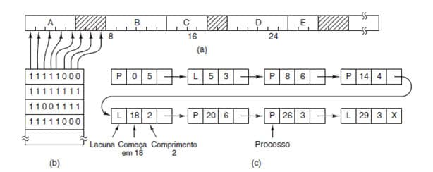
Figura 25
A letra (a) mostra uma parte da memória com cinco processos e três lacunas. Os tracinhos mostram as unidades de alocação de memória.
A letra (b) mostra o mapa de bits correspondente.
A letra (c) apresenta as mesmas informações como uma lista encadeada.
Gerenciamento de memória com listas encadeadas
A outra forma de gerenciamento é a criação de uma lista encadeada, na qual cada nó da lista corresponde a um segmento de memória alocada – indicada na Figura 25(c) pelo P – ou livre – indicada por L. Além da indicação do status, o nó armazena o endereço inicial do segmento e o seu tamanho em unidades de alocação.
Nesse exemplo, a lista de segmentos está ordenada pelo endereço. Ordenando dessa maneira, quando um processo termina a lista deve ser atualizada. Um processo que termina normalmente tem dois vizinhos, exceto se for o primeiro ou o último da lista, que podem ser processos ou lacunas.
Essa situação gera quatro possíveis combinações a serem tratadas e que são exibidas na Figura 26.
Considerando que o processo X terminou, deve-se:
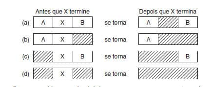
Figura 26: Gerência da lista encadeada
Na situação (a), atualizar a lista exige substituir um P por um L.
Nas situações (b) e (c), duas entradas são aglutinadas em uma e a lista se torna uma única entrada mais curta.
Na situação (d), três entradas são aglutinadas e dois itens são removidos da lista.
Memória virtual
Como vimos anteriormente, o espaço de endereçamento lógico de um programa tem que ser mapeado em um espaço de endereçamento físico de memória.
De fato, essa correspondência pode ser deixada totalmente a cargo do SO, de forma que o programa não tenha nenhuma responsabilidade em se ater a um determinado tamanho de memória física disponível.
Assim, o conjunto de endereços que um programa pode endereçar pode ser muito maior que a memória física disponível para o processo em um determinado momento, até mesmo mais que o total de memória fisicamente disponível na máquina.
A esse conjunto de endereços chamamos de espaço de endereçamento virtual. Ao conjunto de endereços reais de memória denominamos espaço de endereçamento real.
Assim, como os programas podem ser maiores que a memória física, somente uma parte de cada programa precisa estar na memória durante a execução. As partes que não são necessárias em um determinado instante ficam em disco e somente são carregadas quando se tornarem necessárias.
Todo o processo é transparente para o usuário e também para os compiladores e link-editores, pois estes trabalham apenas com o espaço de endereçamento virtual. Apenas o SO se incumbe de carregar ou descarregar as partes necessárias e mapeá-las no espaço de endereçamento real durante a execução.
Como consequência desse mapeamento, o programa não precisa estar nem mesmo em regiões contíguas de memória. Naturalmente, o nível de fracionamento do programa deve ser escolhido de forma a não comprometer o desempenho, na medida em que a tarefa de mapeamento é feita pelo SO com recursos de hardware.
Assim, a memória (tanto a virtual como a real) é dividida em blocos, e o SO mantém tabelas de mapeamento para cada processo, que relacionam os blocos da memória virtual do processo com os blocos da memória real da máquina.
A Figura 27 mostra essa ideia. Note que o espaço de endereçamento virtual é muito maior que a memória física. Observe ainda que o processo é endereçado por partes, no caso páginas, e elas são lidas do disco para a memória e gravadas no disco, em um processo chamado paginação, uma implementação da ideia de swap e que estudaremos a seguir.
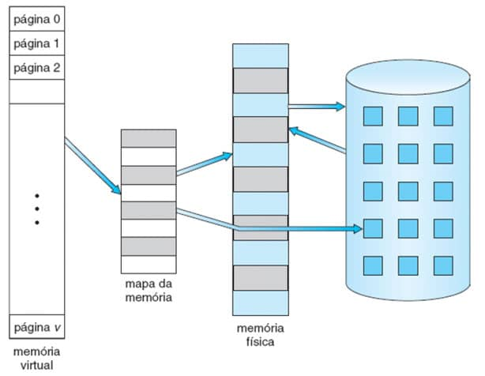
Figura 27: Memória virtual. Fonte: SILBERSCHATZ, 2015.
Paginação
Na paginação, o espaço de endereços é dividido em blocos de igual tamanho que chamamos de páginas. A memória principal também é dividida em blocos de mesmo tamanho (igual ao tamanho da página) denominados molduras.
Esses blocos de memória real são compartilhados pelos processos, de forma que a qualquer momento um determinado processo terá algumas páginas residentes na memória principal (as páginas ativas), enquanto as restantes utilizarão a memória secundária (as páginas inativas).
O mecanismo da paginação possui duas atribuições:
Executar a operação de mapeamento, isto é, determinar qual a página referenciada e em que bloco de memória (se for o caso) ela se encontra.
Transferir páginas da memória secundária para os blocos da memória principal (quando for requerido) e guardá-las de volta na memória secundária quando elas não estiverem em uso.
Observe a Figura 28, que apresenta o esquema de paginação. Nela podemos ver que o processo foi dividido em 4 páginas (0 a 3), a tabela de páginas que as associa com os frames e a alocação das páginas na memória.
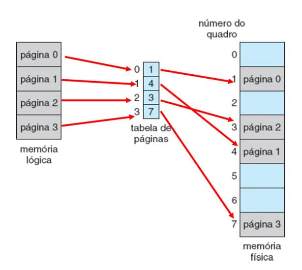
Figura 28: Paginação. Fonte: SILBERSCHATZ, 2015.
Na paginação, o hardware determina tanto o tamanho do quadro como o da página, sendo que o tamanho da página é sempre uma potência de 2 variando normalmente entre 512 bytes e 2KB. O uso de potências de 2 visou facilitar o mapeamento dos endereços virtuais para os físicos.
Controle de espaço livre
Quando um novo processo chega ao sistema para ser executado, o seu tamanho é analisado em páginas. Como cada página do processo necessita de um quadro, se, por exemplo, ele possui 4 páginas, pelo menos 4 quadros devem estar livres. A forma mais fácil de o SO realizar o controle das áreas livres é mantendo uma lista dos quadros livres. Como todos os quadros possuem o mesmo tamanho e o processo pode ser alocado de forma não contígua, a lista não necessita estar ordenada, o que facilita muito a sua manutenção.
É exatamente esta situação que se pode observar na Figura 29(a), que mostra os quadros livres (em tom cinza) e ocupados (em tom azul) na memória física, o novo processo de 4 páginas e a lista de quadros livres com 5 quadros (14, 13, 18, 20 e 15).
A partir desta situação, a página 0 do processo será alocada no primeiro quadro da lista, o 14, a segunda no 13, e assim, sucessivamente, sendo preenchida a tabela de páginas do processo e gerando o cenário que pode ser observado na Figura 29(b).
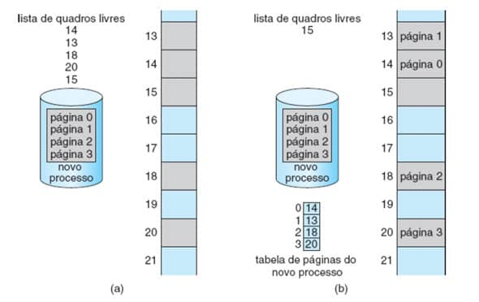
Figura 29: Paginação e controle de quadros livres. Fonte: SILBERSCHATZ, 2015.
Proteção de memória
Em um ambiente paginado, a proteção de memória é provida pelo acréscimo de bits de proteção associados a cada quadro na tabela de páginas.
Um bit pode definir que uma página é apenas de leitura ou se permite também a gravação.
Além dos bits já descritos, normalmente um outro bit denominado válido-inválido é acrescido à tabela para estabelecer se aquela página está no espaço de endereçamento lógico do programa (acesso legal) ou não (acesso ilegal).
Considere a situação da Figura 30. Ela nos mostra um sistema com espaço de endereçamento de 14 bits (0 a 16383) e um processo que usa apenas os endereços de 0 a 10468. Considerando um tamanho de página de 2KB, o processo possui 6 páginas, apesar de ter uma tabela de páginas com mais entradas possíveis.
Na tabela de páginas, apesar de o processo possuir somente 6 delas, as entradas referentes às páginas 6 e 7 estão com o número de quadro 0, o que faria com que uma referência à página 7 gerasse uma exceção para o SO.
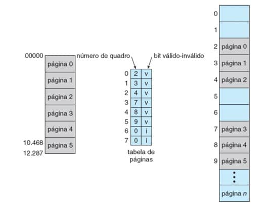
Figura 30: Proteção de memória. Fonte: SILBERSCHATZ, 2015.
Paginação sob demanda
A ideia básica da paginação sob demanda é carregar na memória somente páginas que forem referenciadas na execução.
Obviamente, em um primeiro momento, somente a página inicial do processo será carregada e à medida que as instruções fizerem referências a outras páginas, elas serão carregadas. Essa abordagem faz com que páginas que nunca foram referenciadas jamais sejam carregadas na memória.
E como funciona essa demanda? Como se sabe, o número de blocos alocados a um processo é menor do que o número de páginas que ele usa. Por isso, é possível que um endereço de programa referencie uma página ausente. Nesse caso, a entrada da tabela correspondente estará “vazia” e uma interrupção do tipo page fault é gerada sempre que uma página inativa é requerida e causa a ação descrita na Figura 31.
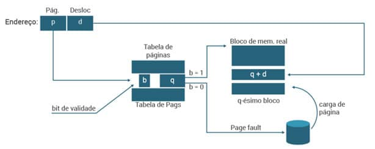
Figura 31: Paginação sob demanda. Fonte: SILBERSCHATZ, 2015.
Resumindo
A interrupção faz com que o mecanismo da paginação inicie a transferência da página ausente da memória secundária para um dos blocos da memória principal e atualize a tabela de páginas. O processo muda de estado, ficando bloqueado até que a transferência termine. A posição ocupada por uma página na memória secundária é guardada em uma tabela separada ou na própria tabela de páginas. Se não houver nenhum bloco de memória disponível, então é necessário desocupar um dos blocos para a página, cuja presença está sendo solicitada. A escolha do bloco é função do algoritmo de troca, conforme será visto adiante.
Políticas de paginação
Para minimizar a ocorrência de page faults surgiu o conceito de working set. Assim, quando um programa começa a executar, a possibilidade de que ele requisite páginas que não estejam na memória é muito grande. Entretanto, à medida que mais páginas vão sendo carregadas, a ocorrência de page faults vai diminuindo devido ao princípio da localidade dos programas. Assim, cabe ao SO definir um conjunto de páginas que devem ficar carregadas, sabendo que se trata de um compromisso entre capacidade e velocidade.
Quanto mais páginas carregadas no working set, menor o risco de geração de page fault, logo, melhor é o desempenho. Em compensação, quanto mais páginas no working set, menos processos podem estar carregados ao mesmo tempo.
Definido o working set, resta definir qual deve ser a página retirada da memória quando ocorre um page fault, pois uma página precisa ser carregada e não existe quadro livre. Esta decisão pode obedecer a várias políticas.
Entretanto, antes de descartar qualquer página, o SO precisa saber se houve alguma alteração nela enquanto ela esteve na memória. Se houve, então essa página precisa ser salva em disco antes de ser descartada para que nenhum dado se perca. Neste caso, o SO mantém um bit na tabela de páginas chamado Bit de Modificação. Caso o bit indique que houve mudança, a página é salva em disco, onde poderá ser futuramente resgatada.
As políticas de liberação de páginas são:
Página aleatória
Escolhe-se simplesmente qualquer página. A desvantagem é que pode-se escolher uma página que seja muito acessada.
First-in-first-out (FIFO)
Retira-se a página carregada há mais tempo. A desvantagem é que pode retirar páginas que sejam acessadas periodicamente.
Least-recently-used (LRU)
Retira-se a página utilizada pela última vez há mais tempo. A desvantagem é o overhead causado pela necessidade de, a cada acesso, atualização do momento em que a página foi acessada.
Not-recently-used (NRU)
A página não utilizada nos últimos k acessos é substituída. A desvantagem também é o overhead causado pela necessidade de, a cada acesso, atualizar um contador de acessos à página.
Least-frequently-used (LFU)
Escolhe-se a página que tenha o menor número de acessos descritos em um contador de acessos. A ideia é manter na memória as páginas que são muito acessadas. Entretanto, o problema é que páginas recém-carregadas no working set terão baixo número de acessos e serão indesejavelmente cotadas para retirada.
Sistemas reais, como o Linux, implementam normalmente alguma variação da LRU a partir de algoritmos que buscam se aproximar desta política. Um dos mais comumente usados é o algoritmo de segunda chance.
Algoritmo de segunda chance
Também conhecido como algoritmo do relógio, ele busca uma aproximação ao LRU. Para isso, na tabela de páginas são acrescidos bits de referência associados a cada uma de suas entradas.
Inicialmente, todos os bits são desligados (posicionados com 0) pelo sistema operacional. Quando um processo de usuário é executado e uma página é referenciada, o bit associado a ela é ligado (com 1) pelo hardware. Após algum tempo, podemos determinar as páginas que têm sido usadas ou não usadas examinando os bits de referência, embora sem saber a ordem de uso.
Comentário
O algoritmo utiliza uma política de substituição FIFO, mas com uma diferença: quando uma página é selecionada para substituição, antes de fazer a troca verificamos seu bit de referência. Se o seu valor for zero, fazemos a substituição; se for 1, damos à página uma segunda chance zerando o seu bit e passamos à próxima página. Esse método assegura que se uma página for sempre referenciada, ela nunca sairá da memória.
Este algoritmo é normalmente implementado como uma fila circular (Figura 32) onde um ponteiro (o ponteiro do relógio, daí seu nome) indica a página que deve ser substituída a seguir. Quando um quadro é necessário, o ponteiro avança até encontrar uma página com bit de referência 0. Conforme ele avança, os bits de referência são zerados (Figura 32a).
Uma vez que uma página vítima seja encontrada, ela é substituída e a nova página é inserida na fila circular nessa posição (Figura 32b).
Observe que, na pior das hipóteses, quando todos os bits estão ligados, o ponteiro circula a fila inteira, dando a cada página uma segunda chance. Ele zera todos os bits de referência antes de selecionar a próxima página para substituição.
A substituição da segunda chance degenera para uma substituição FIFO se todos os bits estiverem ligados.
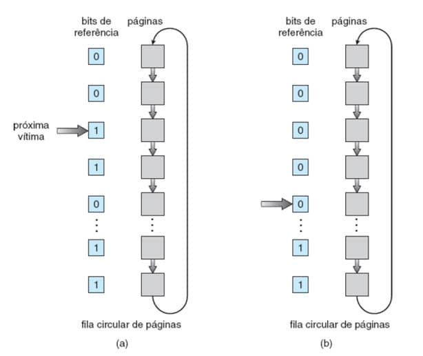
Figura 32: Algoritmo de segunda chance. Fonte: SILBERSCHATZ, 2015.
Um aperfeiçoamento que pode ser realizado neste algoritmo é levar em conta também o valor de bit de modificação. Dessa forma, a página pode estar em uma destas quatro categorias, da mais baixa para a mais alta:
(0, 0) nem recentemente utilizada, nem modificada
Melhor página para a substituição.
(0, 1) não recentemente utilizada, mas modificada
Não é uma opção tão boa porque a página terá que ser gravada em disco antes da substituição.
(1, 0) recentemente utilizada, mas não modificada
Provavelmente será usada outra vez em breve.
(1, 1) recentemente utilizada e modificada
Provavelmente será usada de novo em breve e terá que ser gravada em disco antes de poder ser substituída.
Nesta implementação, continuamos utilizando uma fila circular, mas em vez de verificar o bit de referência, determinamos a categoria da página e substituímos a primeira página da categoria mais baixa.
A principal diferença entre esse algoritmo e o algoritmo do relógio mais simples é que aqui damos preferência à substituição de páginas que não foram modificadas, para reduzir o número de operações de gravação requeridas, já que páginas que não foram modificadas ao serem substituídas não necessitam de gravação no disco.
Segmentação
Devido ao grande número de page faults da paginação, a segmentação surgiu como uma alternativa de gerência de memória, na qual o programa não mais é dividido em blocos de comprimentos fixos (as páginas), mas, sim, em segmentos de comprimentos variados com um sentido lógico. Ou seja, a paginação procedia uma divisão física do programa e, às vezes, isso levava a um número muito grande de page faults por não observar suas características lógicas.
A segmentação busca aproveitar exatamente essas características, agrupando num segmento partes do programa que se referenciam mutuamente e que, quando trazidas à memória, estarão todas juntas evitando o que nesse caso é chamado de segment faults com tanta frequência.
Nesse esquema, o espaço de endereços torna-se bidimensional: endereços de programa são denotados pelo par (nome do segmento, endereço dentro do segmento).
Para facilitar a implementação do mecanismo de transformação de endereços, o SO troca o nome do segmento por um número, quando o segmento é referenciado pela primeira vez.
Considerando o par (s,d) como sendo um endereço de programa generalizado, onde s = número do segmento e d = endereço dentro do segmento, então o esquema de geração seria o apresentado na Figura 33:
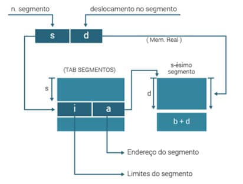
Figura 33: Segmentação. Fonte: SILBERSCHATZ, 2015.
Conforme podemos ver, a transformação de endereço é realizada por intermédio de uma tabela de segmentos (uma tabela para cada processo). A “s-ésima” entrada da tabela contém o tamanho (l) e a posição inicial (a) da memória, onde o “s-ésimo” segmento foi carregado.
As entradas da tabela são chamadas de Descritores de Segmento. O algoritmo de mapeamento é:
Extrair endereço de programa (s,d).
Usar “s” para indexar tabela de segmentos.
Retirar o endereço inicial do segmento (a).
Se d < 0 ou d > l então “violação de memória”.
a + d é o endereço requerido.
A busca de espaços para um segmento a ser trazido à memória nos leva novamente aos problemas de gerência por partições variáveis. A diferença aqui é que o espaço contíguo só é necessário para o segmento e não para todo o processo.
A diferença principal entre a segmentação e a paginação é que a primeira busca uma divisão lógica do espaço de endereçamento do processo, enquanto a segunda busca uma divisão física desse mesmo espaço. Ambas se engajam na implementação de uma política de memória virtual de um único nível. Páginas têm seu tamanho determinado pelo tamanho da palavra, enquanto segmentos têm seu tamanho determinado pelo tamanho da memória disponível.
Gerenciamento de Memória no Linux
A gerência de memória no Linux envolve dois aspectos distintos, cada um efetuado por um componente específico:
A alocação e liberação da memória física - páginas, grupos de páginas e pequenos blocos de RAM.
A manipulação da memória virtual - mapeamento da memória física para o espaço de endereçamento de processos em execução.
Gerenciamento da memória física no Linux
Em razão de restrições específicas do hardware, o Linux divide a memória física em quatro zonas ou regiões diferentes que, dependendo da arquitetura, correspondem a especificações diferentes.
Em uma arquitetura Intel x86 de 32 bits elas são:
ZONE_DMA
Para dispositivos ISA que somente podem acessar os primeiros 16MB da memória para fazer acesso direto.
ZONE_DMA32
Para dispositivos que podem acessar os primeiros 4GB da memória em operações de DMA.
ZONE_HIGHMEM
Corresponde à memória alta (high memory) que não está mapeada para o kernel do sistema, que, nesta arquitetura, corresponde aos primeiros 896MB do espaço de endereçamento, ficando todo o espaço restante até 4GB disponível para uso.
ZONE_NORMAL
Corresponde a todo o resto da memória.
Importante: em modernos sistemas de 64 bits, como o Intel x86 de 64 bits, existe uma pequena ZONE_DMA de 16 MB para ser utilizada por sistemas legados e todo o resto fica na ZONE_NORMAL, sem ZONE_HIGHMEN ou ZONE_DMA32.
A Figura 34 mostra o mapeamento entre as zonas e os endereços físicos na arquitetura do Intel x86 de 32 bits.
Figura 34: Relacionamento entre endereços físicos e zonas no Intel x8632. Fonte: SILBERSCHATZ, 2015.
O kernel mantém uma lista das páginas livres em cada zona e, ao receber uma solicitação de memória, faz o atendimento disponibilizando as páginas na zona apropriada.
Cada zona possui seu próprio alocador de páginas que é o responsável por alocar e desalocar as páginas físicas.
Memória virtual no Linux
O mecanismo de memória virtual é o responsável por manter o espaço de endereçamento disponível para cada processo. Para fazer o gerenciamento são mantidos, para cada processo, duas visões diferentes:
Visão lógica
descreve as instruções que o sistema de memória virtual recebeu relacionadas com o layout do espaço de endereçamento. Nessa visão, o espaço de endereçamento consiste em um conjunto de regiões não sobrepostas, cada uma representando um subconjunto alinhado e contínuo de páginas do espaço de endereçamento. As regiões de cada espaço de endereçamento são vinculadas em uma árvore binária balanceada para permitir a busca rápida da região correspondente a qualquer endereço virtual.
Visão física
corresponde a entradas nas tabelas de páginas de hardware do processo, que identificam a locação corrente exata de cada página de memória virtual, esteja ela em disco ou na memória física.
Regiões de memória virtual
O Linux trabalha com vários tipos de regiões de memória virtual.
Uma região de memória virtual tem normalmente um arquivo associado a ela e funciona como uma porta de entrada para uma seção do arquivo de paginação.
Sempre que o processo faz referência a uma página da região, a entrada correspondente na tabela de páginas é preenchida com o endereço de uma página do cache de páginas do kernel com o valor do deslocamento apropriado no arquivo.
Outro aspecto importante nas regiões é como elas tratam as gravações. Uma região pode ser mapeada de forma compartilhada ou privada para o espaço de endereçamento de um processo.
Se um processo gravar em uma região mapeada privadamente, então, o paginador detectará que uma cópia após a gravação é necessária para manter as alterações locais ao processo. Por outro lado, gravações em uma região compartilhada resultam na atualização do objeto mapeado para essa região, de modo que a alteração seja imediatamente visível por qualquer outro processo que esteja mapeando esse objeto.
Tempo de vida de um espaço de endereçamento virtual
Duas situações geram a criação de um novo espaço de endereçamento virtual:
Quando um processo executa um novo programa com a chamada de sistema exec( )
Neste caso, o processo recebe um novo espaço de endereçamento virtual totalmente vazio. A rotina de carga do programa faz o mapeamento do espaço de endereçamento com regiões de memória virtual.
Quando um novo processo é criado pela chamada de sistema fork( )
Neste caso, é realizada uma cópia completa do espaço de endereçamento virtual do processo pai para o conjunto das tabelas de páginas criadas para o processo filho, copiadas diretamente nas tabelas do filho. Portanto, após a ramificação, o pai e o filho compartilham as mesmas páginas físicas de memória em seus espaços de endereçamento.
Permuta e paginação
Como se sabe, uma atividade extremamente importante na memória virtual é a execução do pagein e pageout.
Como acontece nos demais sistemas de paginação, o Linux trabalha em dois passos:
Decide qual página deve ser substituída na memória e se é necessário gravá-la em disco.
Carrega a nova página no quadro liberado pela página que foi substituída.
No Linux, a substituição de páginas utiliza uma política similar ao algoritmo do relógio, modificada para trabalhar com múltiplos ciclos.
Cada página possui uma “idade” que é ajustada a cada ciclo do relógio. A idade indica há quanto tempo a página foi alocada e/ou o nível de atividade que a página experimentou recentemente. Dessa forma, páginas acessadas com frequência recebem um valor de idade mais alto e a idade de páginas acessadas raramente cairá em direção a zero a cada ciclo.
Essa quantificação da idade permite que o paginador selecione as páginas a serem extraídas com base na política da menos frequentemente utilizada (LFU).
No tocante à Memória virtual do Kernel, o Linux reserva para seu próprio uso interno uma região constante do espaço de endereçamento virtual de cada processo. As entradas da tabela de páginas que são mapeadas para essas páginas do kernel são marcadas como protegidas, para que as páginas não sejam visíveis ou modificáveis quando o processador estiver sendo executado em modalidade de usuário.
Execução e carga de programas de usuário
A execução de programas de usuário pelo kernel do Linux é disparada pela chamada de sistema exec( ), que instrui o kernel a executar um novo programa dentro do processo em curso, substituindo completamente o contexto de execução corrente pelo contexto inicial do novo programa.
Para fazer a carga, é invocado o carregador que pode inicialmente fazer ou não a alocação na memória física do processo, mas sempre realiza o mapeamento do programa para a memória virtual.
Mapeamento de programas para a memória
No Linux, o carregador binário não carrega um arquivo desse mesmo sistema na memória física. Em vez disso, as páginas do arquivo binário são mapeadas para regiões de memória virtual. É utilizada a técnica da Paginação sob Demanda, de forma que somente quando a página for necessária é que ele será efetivamente alocado na memória física.
É responsabilidade do carregador binário do kernel estabelecer o mapeamento inicial da memória. Um arquivo binário no formato ELF consiste em um cabeçalho seguido por várias seções de páginas alinhadas. O carregador ELF funciona lendo o cabeçalho e mapeando as seções do arquivo para regiões separadas da memória virtual.
A Figura 35 mostra o layout típico de regiões de memória estabelecidas pelo carregador ELF. Em uma região reservada em uma extremidade do espaço de endereçamento reside o kernel, em sua própria região privilegiada de memória virtual inacessível a programas normais de modalidade de usuário.
O resto da memória virtual fica disponível para aplicações que podem usar as funções de mapeamento da memória do kernel para criar regiões que mapeiem uma parte de um arquivo ou que estejam disponíveis para dados de aplicações.
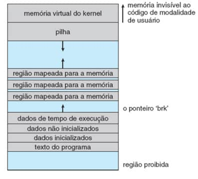
Figura 35: Layout de memória de um arquivo ELF. Fonte: SILBERSCHATZ, 2015.
A função do carregador é estabelecer o mapeamento inicial da memória para permitir que a execução do programa comece. As regiões que precisam ser inicializadas incluem a pilha e as regiões de texto e dados do programa.
A pilha é criada no topo da memória virtual de modalidade de usuário; ela cresce para baixo em direção a endereços de numeração menor e inclui cópias dos argumentos e variáveis de ambiente fornecidas ao programa na chamada de sistema exec( ).
As outras regiões são criadas perto da extremidade inferior da memória virtual e incluem:
As seções do arquivo binário que contêm texto de programas ou dados apenas de leitura, que são definidas como apenas leitura e protegidas contra gravação.
Dados inicializados ou não que podem sofrer gravação são alocados a seguir.
O heap, que é uma área de tamanho variável e que armazena os dados em tempo de execução. Tem seu limite apontado por brk, o que permite sua expansão ou retração.
Uma vez que esses mapeamentos tenham sido estabelecidos, o carregador inicializa o registrador de contagem de programas do processo com o ponto inicial registrado no cabeçalho ELF, e o processo pode ser incluído no escalonador.
Vinculação estática e dinâmica
Uma vez que o programa foi carregado e escalonado para o processador, todos os conteúdos necessários para sua execução já estarão no seu espaço de endereçamento virtual. Entretanto, a maior parte dos programas utiliza códigos de bibliotecas do sistema que também devem ser carregados.
Uma maneira simples de lidar com isso é embutir diretamente no executável do programa o código da biblioteca, o que é realizado pelo ligador durante a geração do executável. Dessa forma, o programa é vinculado estaticamente às suas bibliotecas e executáveis. Com este tipo de vinculação podem iniciar a execução imediatamente assim que carregados.
Essa abordagem, entretanto, tem como principal desvantagem o fato de que cada programa gerado deve conter cópias exatas das mesmas funções comuns das bibliotecas do sistema. É muito mais eficiente, tanto em termos de memória física como também de uso de espaço em disco, carregar as bibliotecas do sistema na memória apenas uma vez. Isso pode ser feito utilizando os recursos de vinculação dinâmica existentes no Linux.
Cada programa vinculado dinamicamente contém uma pequena função vinculada estaticamente que é chamada quando o programa é iniciado. Essa função estática apenas mapeia a biblioteca de vinculação para a memória e executa o código contido na função.
A biblioteca de vinculação determina as bibliotecas dinâmicas requeridas pelo programa e os nomes das variáveis e funções necessárias destas por meio da leitura das informações contidas em seções do binário ELF. Ela mapeia, então, as bibliotecas para o meio da memória virtual e resolve as referências para os símbolos contidos nas mesmas. Não importa para que local exato da memória essas bibliotecas compartilhadas sejam mapeadas, elas são compiladas em código independente de posição, que pode ser executado em qualquer endereço da memória.
Utilitários e comandos para gerenciar a memória do sistema Linux
Para gerenciar a memória de um sistema Linux podem ser utilizados diversos comandos, inclusive utilitários para esse propósito, conforme será apresentado na sequência. Ao final deste módulo é disponibilizado o vídeo em que os pontos abordados são executados na prática, em uma máquina virtual.
Obtendo informações pela linha de comando
Para estes exemplos usaremos uma máquina virtual com Ubuntu instalado.
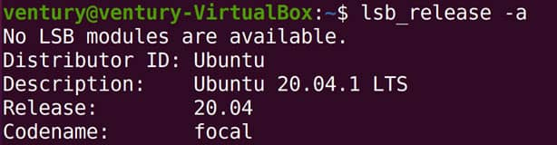
Captura de tela da execução do comando htop.
O Linux provê uma série de comandos de linha que obtêm informações do sistema de memória. Vejamos os principais:
FREE
O comando free exibe informações precisas sobre o uso dos recursos de memória do sistema.
Neste exemplo, pode-se observar uma máquina virtual com aproximadamente 4GB (3996 MB) de RAM e tendo em uso 1235MB, sobrando 2338MB disponíveis.
O comando mostra ainda que temos uma área de 448MB para swap da qual foram utilizados 8MB.
O argumento -m faz com que as informações venham em MB.
TOP
Este comando mostra informações a respeito dos processos rodando em sua máquina, incluindo o uso da memória.
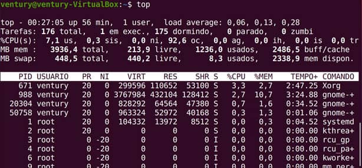
VMSTAT
Este comando mostra a situação da memória virtual da máquina.
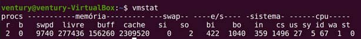
Getconf PAGESIZE
O comando getconf PAGESIZE mostra o tamanho da página no sistema de memória virtual que, neste caso, é de 4096 bytes, ou seja, 4KB.
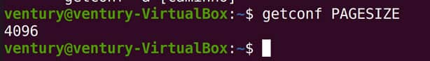
Swapon
O comando swapon mostra informações a respeito do arquivo de swap.
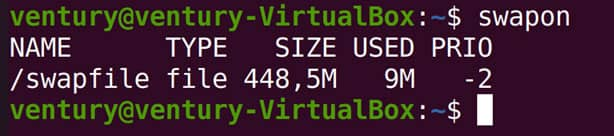
Utilitários para acesso à informação
Vários utilitários que podem ser chamados na linha de comando ou por meio da interface gráfica podem ser utilizados para monitorar o uso da memória do Linux. Com exceção do monitor do sistema, todos os outros precisam ser instalados no Ubuntu, pois não existem como padrão.
Htop
Esse aplicativo htop é uma evolução do comando top e exibe de forma interativa as informações do sistema.
Ele é chamado na linha de comando:
htop
Após a chamada, ele carrega sua interface, na qual, em sua parte superior, temos informações agregadas e, na parte inferior, a lista de processos com suas informações de CPU, memória etc.
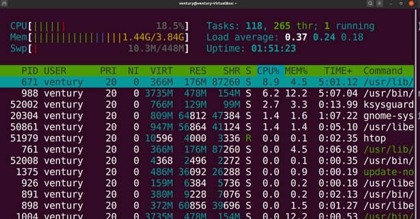
Captura de tela do Software htop.
Neste aplicativo, as cores que aparecem no resumo na parte superior possuem significado.
Sendo assim, observa-se o seguinte:Essas informações podem ser obtidas ainda apertando F1
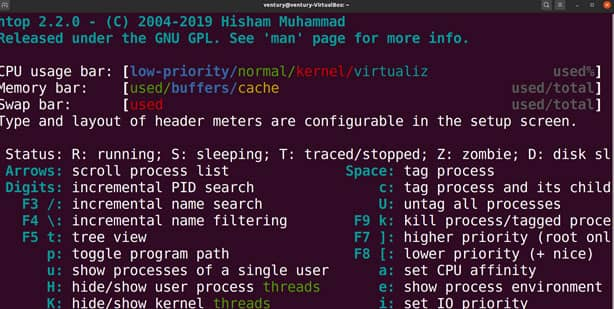
Ksysguard
O utilitário ksysguard é outro que pode ser chamado na linha de comando e que não vem instalado por padrão.
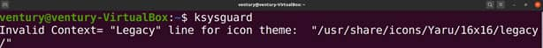
Ele possui uma interface gráfica que mostra as informações do sistema.
Na aba Tabela de Processos, ele mostra todos os existentes no sistema e as informações de CPU e memória.
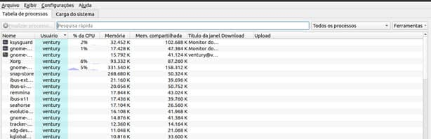
Na aba Carga do Sistema, ele mostra de forma gráfica a utilização pelos processos.
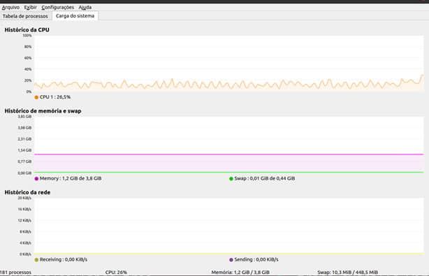
Monitor do Sistema
Este aplicativo vem instalado por padrão e pode ser acessado na aba Ferramentas.
Após a abertura, ele apresenta uma interface gráfica com 3 abas na parte superior. São elas: